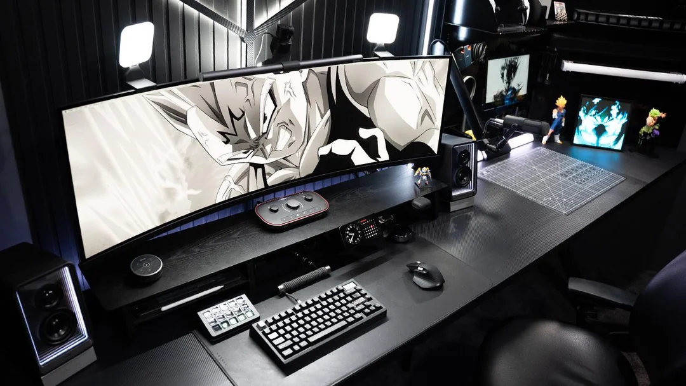

A NVIDIA RTX PRO 6000 Blackwell Workstation Edition chegou como a GPU de desktop mais poderosa já criada. Com 96 GB de VRAM GDDR7 ECC, ela mudou o que é possível fazer com IA local — de modelos de 70B+ parâmetros até pipelines completos de fine-tuning, sem depender de nuvem.
Especificações da RTX PRO 6000 Blackwell Workstation Edition
| Especificação | Valor |
|---|---|
| Arquitetura | NVIDIA Blackwell |
| VRAM | 96 GB GDDR7 ECC |
| Largura de banda | 1,8 TB/s (interface 512-bit) |
| CUDA Cores | 24.064 |
| Tensor Cores | 5ª geração, com suporte a FP4 |
| RT Cores | 4ª geração |
| Conectividade | 4x DisplayPort 2.1b, PCIe 5.0 x16 |
| TDP | 600W |
| Preço aproximado | US$ 8.500–9.200 (~R$ 47.000–51.000) |
Por que ela é diferente de tudo que veio antes
O salto de 48 GB (RTX 6000 Ada) para 96 GB de VRAM dobra a capacidade de carregar modelos grandes inteiramente na GPU, eliminando o gargalo de offload para RAM do sistema. A NVIDIA estima ganhos de até 2,5x em treinamento de IA frente à geração anterior, e até 4,5x em simulações CFD.
O suporte a FP4 nos Tensor Cores de 5ª geração permite rodar modelos quantizados com qualidade próxima de FP8, mas usando metade da memória — na prática, isso significa rodar um Llama 3.1 405B ou modelos equivalentes com folga, algo impensável em GPUs de consumo até pouco tempo atrás.
Setup 1 — Dual RTX PRO 6000: Estação de IA Definitiva (192 GB VRAM)

Para quem quer rodar os maiores modelos open-weight disponíveis (Llama 3.1 405B, DeepSeek-V3, Qwen 2.5 72B+ em paralelo) sem quantização agressiva, duas RTX PRO 6000 somam 192 GB de VRAM combinada — suficiente para inferência e fine-tuning LoRA de modelos de fronteira.
| Componente | Sugestão | Faixa de preço |
|---|---|---|
| GPU | 2x NVIDIA RTX PRO 6000 Blackwell Workstation (96GB cada) | R$ 94.000–102.000 |
| CPU | AMD Threadripper PRO 7975WX ou Intel Xeon W9-3495X | R$ 18.000–28.000 |
| Placa-mãe | WRX90 (sTR5) ou W790 com 4+ slots PCIe x16 | R$ 6.000–9.000 |
| RAM | 256 GB DDR5 ECC RDIMM | R$ 9.000–13.000 |
| SSD | 2x 4TB NVMe PCIe 5 | R$ 5.000–7.000 |
| Fonte | 1600W 80+ Titanium | R$ 3.000–4.500 |
| Gabinete + refrigeração | Full-tower com fluxo de ar dedicado para 600W x2 | R$ 2.500–4.000 |
Total estimado: R$ 137.500–167.500 sem monitor e periféricos.
Setup 2 — Dual RTX PRO 6000 Max-Q: Workstation Compacta e Eficiente (192 GB VRAM)
A variante Max-Q opera em TDP reduzido, permitindo configurações de 4 GPUs em gabinetes menores com menos esforço de refrigeração. Para quem quer os mesmos 192 GB de VRAM combinada com menor consumo e ruído, esse é o caminho — ideal para home labs e pequenos estúdios de IA.
| Componente | Sugestão | Faixa de preço |
|---|---|---|
| GPU | 2x NVIDIA RTX PRO 6000 Blackwell Max-Q (96GB cada) | R$ 88.000–96.000 |
| CPU | AMD Ryzen Threadripper PRO 7965WX | R$ 12.000–16.000 |
| Placa-mãe | TRX50 ou WRX80 com PCIe 5.0 | R$ 4.500–6.500 |
| RAM | 128 GB DDR5 ECC | R$ 5.000–7.000 |
| SSD | 2TB NVMe PCIe 5 | R$ 1.800–2.500 |
| Fonte | 1200W 80+ Platinum | R$ 1.800–2.800 |
| Gabinete | Mid/full-tower silencioso | R$ 1.500–2.500 |
Total estimado: R$ 114.600–133.300 sem monitor e periféricos.
RTX PRO 6000 vs H100: qual escolher para IA?
A H100 ainda leva vantagem em workloads corporativos pesados graças ao NVLink nativo e memória HBM3 de altíssima banda — a RTX PRO 6000 não tem NVLink. Mas para quem quer rodar modelos localmente sem depender de data center, os 96 GB de GDDR7 por placa, o suporte a múltiplos monitores 8K e o preço bem abaixo de uma H100 fazem da RTX PRO 6000 a escolha mais prática para IA local de ponta em 2026.
Resposta rápida: a NVIDIA RTX PRO 6000 Blackwell Workstation Edition (96GB GDDR7) é a GPU de desktop mais poderosa de 2026. Para IA local de ponta, um setup com 2x RTX PRO 6000 entrega 192GB de VRAM combinada — suficiente para os maiores modelos open-weight do mercado, seja na versão Workstation (mais performance) ou Max-Q (mais eficiência e silêncio).
Veja também: quanto custa um PC para IA local, guia completo de VRAM, guia de inferência local e LLMs locais e quantização.